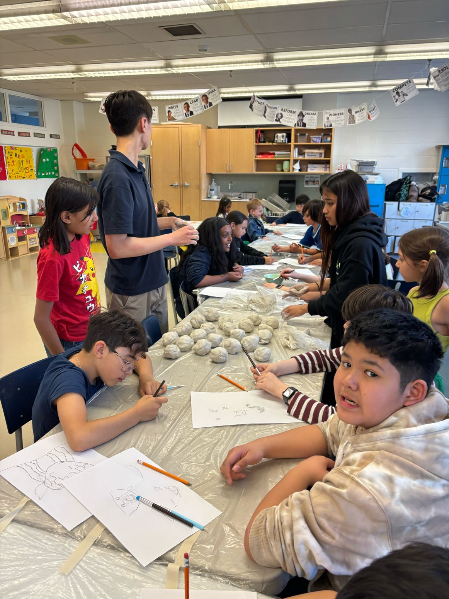
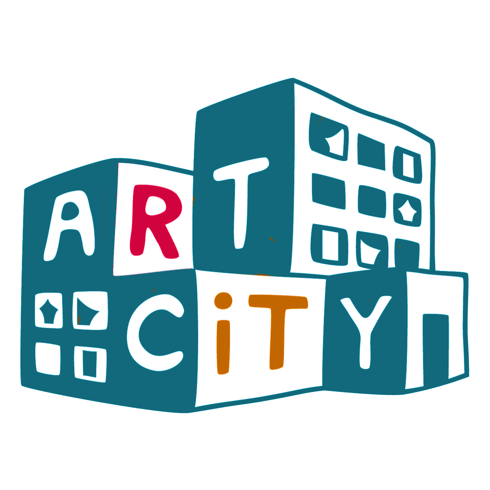
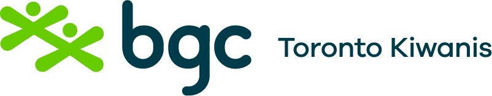
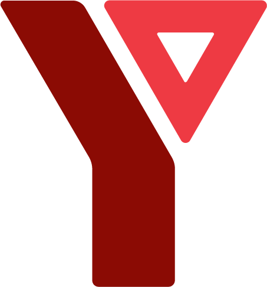
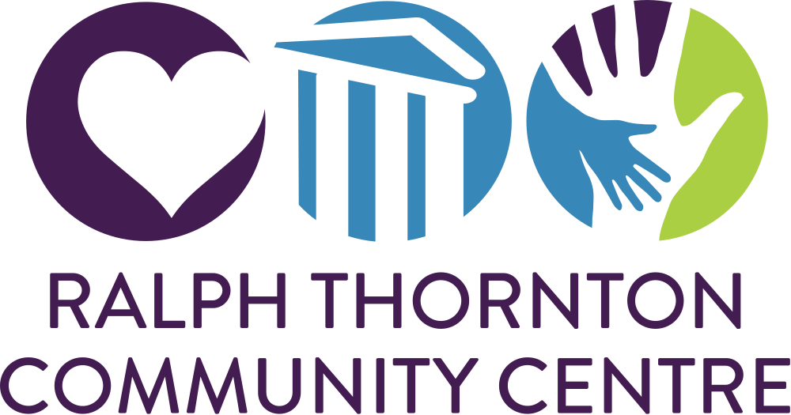
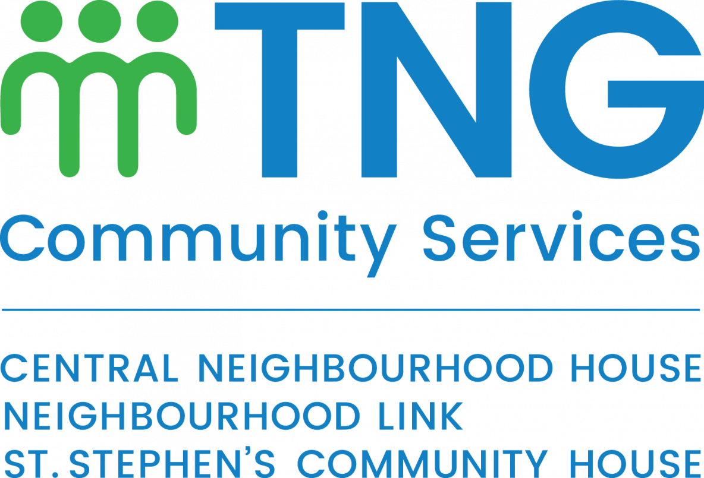
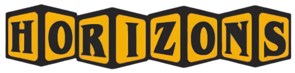
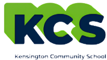
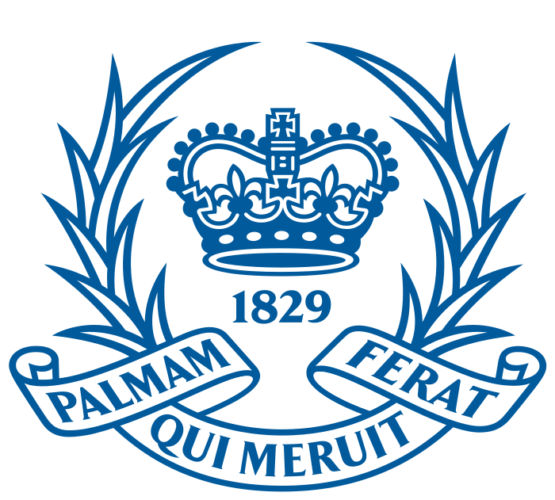

children & youth
Young artists reached through free creative programming.
Numbers help show the scale. The moments around the table show what that scale actually means.
young people reached through free creative programming
Each number is connected to real time spent creating — one-hour sessions, workshop series, volunteers, materials, and partner spaces making room for art.
Young artists reached through free creative programming.
Time spent creating, experimenting, and learning together.
A growing team helping workshops and programs happen.
With more community connections and programs continuing to grow.











Our timeline now includes the first partnership, early trips, workshop milestones, showcases, and summer programming. New dates can be added as Hands & Canvas grows.
Explore Our Timeline